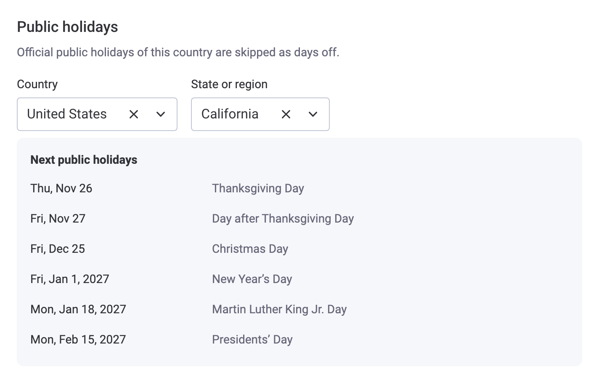
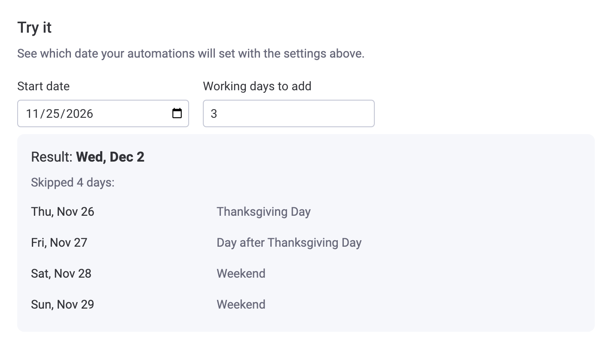

How to use Working Days & Holidays
Set due dates and timelines in working days. Your monday.com automations skip weekends, public holidays and your company days off — for any work week and more than 200 countries, states and regions.
Before you start
An account admin installs the app from the monday.com marketplace. Automations with Working Days actions work on any board you can automate. No extra columns are needed: you use your own Date, Timeline and Numbers columns.
1. Set your calendar
- Open Apps → Installed apps → Working Days & Holidays → Settings.
- Choose the days your team works. Monday to Friday is the default; Sunday to Thursday or a six-day week work too.
- Pick your country and, if it has them, your state or region. Official public holidays are then skipped.
- Add company days off, such as an office closure between Christmas and New Year, and click Save.

Use Try it at the bottom of the settings to see the date your automations will set — and which days were skipped and why.

2. Add an automation
- On a board, click Automate → Create automation.
- Choose a trigger, for example When column changes → your Start date column.
- In the action list, scroll to Working Days & Holidays and pick an action.
- Select your columns and the number of days, then click Create automation.
Actions
| Action | What it does |
|---|---|
| Add working days | Sets a date column to a date plus N working days. Use a negative number to go back. |
| Move to next working day | If a date falls on a weekend, holiday or day off, moves it to the next working day. |
| Move to previous working day | The same, but moves the date back — handy for deadlines that must not slip. |
| Count working days between dates | Writes the number of working days between two dates (both included) to a Numbers column. |
| Count working days in timeline | Writes the number of working days inside a timeline to a Numbers column. |
| Set timeline by working days | Fills a timeline that starts on a date and lasts N working days. |
| Set timeline from dates | Fills a timeline from a start date and an end date column. |
| Set dates from timeline | Copies the start and the end of a timeline into two date columns. |
Popular automations
Tip: for “due in 3 business days after an item is created”, add monday's own automation “When an item is created, set Start to today”, then the first automation above.
Questions
Which holidays are skipped?
Official public holidays of the chosen country, plus those of the state or region if you pick one. Bank, school and optional holidays are not skipped. Add any extra closures as company days off.
What if a date has a time?
The time is kept. The working day is checked for the date as monday.com stores it (UTC).
Will an automation run in a loop?
No. Working Days writes a value only when it changes, so chains like “Due changes → move Due” stop by themselves. Choose different columns for the start date and the result.
What happens on a timeline that falls on a weekend?
The move actions pull the start forward and the end back to working days. If the whole timeline is on non-working days, the automation reports an error instead of guessing.
Does it work on the mobile app?
Yes — automations run on monday.com's servers, so dates update whether the change was made on the web or on a phone. Settings and automations are set up on the web.
Support
Questions or ideas? Email chumachenko.vadym@gmail.com.
Public holiday data: date-holidays (CC BY-SA 4.0).